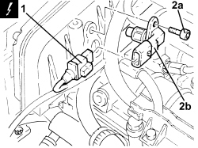
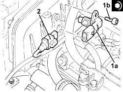
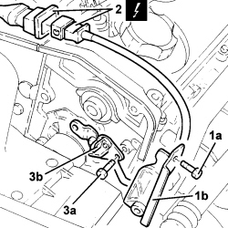

1060G22 CAM ANGLE SENSOR - R.R
- Path
- Procedures > 10 ENGINE > 1060 DIESEL INJECTION SYSTEM > 1060G DIESEL INJECTION PRESSURE PUMP ELECTRONIC CONTROL > 1060G22 CAM ANGLE SENSOR - R.R
- Kind
- repair procedure (removal / refitting; the operation number is the code)
- Applies to
- engines: 1.9 JTD 8v, 1.9 JTD 16v, 2.4 JTD 20v; all production periods
- Interactive page
- https://sloeber94.github.io/elrnDB-fCrm/en/#/194000336
Applies to: engines: 1.9 JTD 16v, 2.4 JTD 20v; all production periods
 Removing
Removing
 Refitting
Refitting- Make sure that the ignition key is in the OFF position, then disconnect the battery terminal (-).
Description | Connector | |
|---|---|---|
- | Battery |
Op. 1016A10 SOUND-PROOFING COVER - R.R
1. Disconnect the electrical connection for the cam angle sensor.
Description | Connector | |
|---|---|---|
1 | Timing sensor |
2. Undo the bolts (2a) and remove the cam angle sensor (2b).

Applies to: engines: 1.9 JTD 16v, 2.4 JTD 20v; all production periods
Refitting
Removing1. Position the cam angle sensor (1a) in its housing and secure it tightening the bolt (1b) to the recommended torque.
Component | Fastening | dia | Value (daNm) | Validity |
|---|---|---|---|---|
Cam angle sensor | Bolt (pretreated to be replaced for 1.9 JTD 8v) | M6 | (cylinder head extension side) 0.8 - 1.0 | 1.9 JTD 8V 1.9 JTD 16v 2.4 JTD 20v |
2. Connect the electrical connection to the cam angle sensor.

Applies to: engines: 1.9 JTD 16v, 2.4 JTD 20v; all production periods
Op. 1016A10 SOUND-PROOFING COVER - R.R
- Connect the negative battery terminal.
Applies to: engines: 1.9 JTD 8v; all production periods
Removing
RefittingOp. 1016A10 SOUND-PROOFING COVER - R.R
Op. 4450B04 RIGHT FRONT WHEEL - R.R
Op. 7055B54 UNDER ENGINE PROTECTION/GUARD - R.R.
Op. 1092G10 SINGLE ENGINE BELT - R.R
Op. 1092A10 CRANKSHAFT PULLEY - R + R
Op. 1032B10 TOOTHED TIMING BELT - R + R FOR TIMING ADJUSTMENT OR REPLACEMENT
Op. 1032B40 TOOTHED DRIVEN PULLEY (ONE) - R + R WITH TIMING BELT REMOVED
1. Undo the fixing bolts (1a) and remove the side guard (1b) for the timing belt.
2. Disconnect the electrical connection for the cam angle sensor located near the engine oil dipstick pipe.
Description | Connector | |
|---|---|---|
2 | Timing sensor |
3. Undo the bolts (3a) and remove the cam angle sensor (3b).

Applies to: engines: 1.9 JTD 8v; all production periods
Refitting
Removing- Place the cam angle sensor back in its housing and secure it tightening the bolts to the recommended torque.
Component | Fastening | dia | Value (daNm) | Validity |
|---|---|---|---|---|
Cam angle sensor | Bolt (pretreated to be replaced for 1.9 JTD 8v) | M6 | (cylinder head extension side) 0.8 - 1.0 | 1.9 JTD 8V 1.9 JTD 16v 2.4 JTD 20v |
- Connect the electrical connection for the cam angle sensor.
- Place the timing belt side guard in its housing and secure it using the bolts.
Op. 1032B40 TOOTHED DRIVEN PULLEY (ONE) - R + R WITH TIMING BELT REMOVED
Op. 1032B10 TOOTHED TIMING BELT - R + R FOR TIMING ADJUSTMENT OR REPLACEMENT
Op. 1092A10 CRANKSHAFT PULLEY - R + R
Op. 1092G10 SINGLE ENGINE BELT - R.R
Op. 7055B54 UNDER ENGINE PROTECTION/GUARD - R.R.
Topics linked from this page (9)
- 1016A10 SOUND-PROOFING COVER - R.R
- 1032B10 TOOTHED TIMING BELT - R + R FOR TIMING ADJUSTMENT OR REPLACEMENT
- 1032B40 TOOTHED DRIVEN PULLEY (ONE) - R + R WITH TIMING BELT REMOVED
- 1092A10 CRANKSHAFT PULLEY - R + R
- 1092G10 SINGLE ENGINE BELT - R.R
- 4450B04 RIGHT FRONT WHEEL - R.R
- 7055B54 UNDER ENGINE PROTECTION/GUARD - R.R.
- A001 BATTERY
- K047 TIMING SENSOR